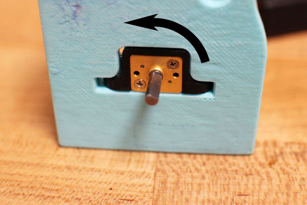

2015-08-25 - Nº 17
Editorial
Aqui está a Newsletter Nº 17 no seu formato habitual.
Esta Newsletter encontra-se mais uma vez disponível no sistema documenta do altLab. Todas as Newsletters encontram-se indexadas no link.
Esta Newsletter tem os seguintes tópicos:
- Novidades da Semana
- Ciência e Tecnologia
- Cursos MOOC
- Modelos 3D
- Open Source
- Circuitos
- Gadget em Destaque
- Artigo do Maker
- Compras
O Linux fez 24 anos. Lançado em 1991 com poucas ambições por parte do seu criador, é usado hoje em milhões de equipamentos e é o sistema operativo que corre em maior número de arquiteturas de Hardware. Nesta Newsletter iremos construir um circuito que usa um LED normal para detetar a luminosidade. Iremos ver uma ferramenta open-source para edição 3D - o Wings 3D. Iremos ver na secção de gadgets uma placa que é programada pela plataforma mbed. O projeto de maker é um Bot com mudanças.
 João Alves ([email protected])
João Alves ([email protected])
O conteúdo da Newsletter encontra-se sob a licença  Creative Commons Attribution-NonCommercial-ShareAlike 4.0 International License.
Creative Commons Attribution-NonCommercial-ShareAlike 4.0 International License.
Novidades da Semana ^
Happy 24th birthday, Linux kernel
"Can you believe Linux is celebrating 24 years already? It was on this day, August 25, back in 1991 when a young Linus Torvalds made his now-legendary announcement on the comp.os.minix newsgroup: Hello everybody out there using minix - I'm doing a (free) operating system (just a hobby, won't be big and professional like gnu) for 386(486) AT clones. This has been brewing since april, and is starting to get ready. I'd like any feedback on things people like/dislike in minix, as my OS resembles it somewhat (same physical layout of the file-system (due to practical reasons) among other things). I've currently ported bash(1.08) and gcc(1.40), and things seem to work. This implies that I'll get something practical within a few months, and I'd like to know what features most people would want. Any suggestions are welcome, but I won't promise I'll implement them :-)"
Red Sprites Above the U.S. and Central America
"Viewing from a point over northwest Mexico, astronauts aboard the International Space Station looked northeast and shot this unusual photograph of a red sprite above the white light of an active thunderstorm. In the top image, the sprite was 2,200 kilometers (1,400 miles) away, high over Missouri or Illinois; the lights of Dallas, Texas appear in the foreground. The sprite shoots up to the greenish airglow layer, near a rising moon. Two minutes and 58 seconds later, as the ISS was over the coastal Mexican resort of Acapulco, the crew documented another red sprite (lower image) over a brilliant white thundercloud and lightning discharge near the coast of El Salvador. The shorter distance to the storm—about 1,150 km (710 miles)—makes it somewhat easier to see details of the sprite. City lights are a diffuse yellow because they are shining through clouds."
World's oldest message in a bottle washes up in Germany after 108 years at sea
"A message in a bottle thrown into the sea 108 years ago by British scientists has been discovered washed up on a beach in Germany. It is believed to be the oldest message-in-a-bottle ever found. Marianne Winkler, a retired post office worker, found the message from the past while on holiday with her husband on the North Sea island of Amrum. Mrs Winkler found the bottle in April, but was shy of publicity and the full story has only now emerged."
Ciência e Tecnologia ^
A Computational Approach for Obstruction-Free Photography
"We present a unified computational approach for taking photos through reflecting or occluding elements such as windows and fences. Rather than capturing a single image, we instruct the user to take a short image sequence while slightly moving the camera. Differences that often exist in the relative position of the background and the obstructing elements from the camera allow us to separate them based on their motions, and to recover the desired background scene as if the visual obstructions were not there. We show results on controlled experiments and many real and practical scenarios, including shooting through reflections, fences, and raindrop-covered windows."
World-record electric motor for aircraft
"Siemens researchers have developed a new type of electric motor that, with a weight of just 50 kilograms, delivers a continuous output of about 260 kilowatts – five times more than comparable drive systems. The motor has been specially designed for use in aircraft. Thanks to its record-setting power-to-weight ratio, larger aircraft with takeoff weights of up to two tons will now be able to use electric drives for the first time."
DARPA is teaching artificial intelligence software to play jazz
"Cinema of late has become littered with themes related to artificial intelligence, but arguably one of the most provocative moments from this genre comes in the movie Her when the intelligent OS begins composing music in its spare time. Music has long been used as something of a gold standard in reference to culture and creativity, showcasing the best and brightest aspects of the human intellect. Now The Defense Advanced Research Projects Agency (DARPA), responsible for the development of emerging technologies for use by the US military, would seem to be robbing humanity of this last emblem of intellectual singularity by teaching an artificial intelligence system to play jazz."
Cursos MOOC ^
- Introduction to Computer Science and Programming Using Python - Começa a 26 de Agosto.
- An Introduction to Interactive Programming in Python (Part 1) - Começa a 29 de Agosto.
- An Introduction to Interactive Programming in Python (Part 2) - Começa a 29 de Agosto.
- Understanding Video Games - Começa a 1 de Setembro.
- Technology Entrepreneurship - Começa a 16 de Setembro.
- Begin Robotics - Começa a 21 de Setembro.
- Cryptography II - Começa a 19 de Outubro.
Modelos 3D ^
Com a disponibilidade de ferramentas que permitem dar azo a nossa imaginação na criação de peças 3D e espaços como o thingiverse para as publicar, esta rubrica apresenta alguns modelos selecionados que poderão ser úteis.
Parametric Mini Modular Framing System - Corner Block and Rail (http://www.thingiverse.com/thing:963667)
This is a customize-able version of the original Mini Modular Framing System: http://www.thingiverse.com/thing:40611
I loved the original, but wanted something that would fit my pieces of acrylic that I want to use to make a light box/light table. I tried to make these match the original, and they're pretty close. I changed the inside fillet to a chamfer, because filleting in OpenSCAD is annoying. Enjoy, and thanks again to idea_beans for the original concept!
Note: the basic rendering shown in the Customizer will show a lot of artifacts on the filleted edges. These will disappear when you actually render the object.
UPDATE: The corner piece was rendering too short; the high was off by the amount of the Corner Radius. This has been fixed and the file re-uploaded.
UPDATE 2: Corner piece was still too short! It's really fixed now!
Customizable Box with Lid (http://www.thingiverse.com/thing:806968)
Found a openscad box by acker on thingiverse and thought I'd update it to work with the thingiverse Customizer. Also fixed an error in the lid calculations.
Use this for whatever you want! Organizers for small screws, nuts and bolts. Boxes to store jewelry in. Storage for RPG figurines, playing cards, and more. The possibilities are endless.
The default tolerance worked fine for my printer on Hatchbox PLA giving a nice friction fit, easy to put on and off but doesn't fall off. But if your lid is too loose or doesn't fit you may have to adjust this value.
If you're making an extra large box you might need to customize the lid and the box separately to be able to print them one at a time, be sure to use the same parameters for the lid and the box when you do this! or they obviously won't fit together.
As always with the customizer, ludacris values will give ludicrous results, so don't go making the walls 100mm thick or something.
UPDATE May 4th 2015 I've added sliding lids and Coin slots as options. I haven't tried the sliding lid myself yet, but it should work although you may need to increase tolerance to 0.15
Ultimate Nut Knob Generator (http://www.thingiverse.com/thing:713300)
Nut knobs are useful for many purposes in DIY projects.
All the different knobs in the gallery are made with this Customizer.
I have added some sample knobs for M3 nuts as there are most common used size for 3d printer. The screwdriver handle for standard 1/4" hex bits is surely a unusual application, but it works great. Especially if you need a extra small one for your project.
If you got problems getting the knob in place, simply heat up the nuts a bit (about 60-80 °C / 140-175 °F) and it easily slips in place.
Please refer the instructions to see the setting I have used for the sample files.
Open Source ^
Wings 3D
Hoje iremos falar do Wings 3D. Trata-se de uma ferramenta de modelação de polígonos que permite o desenho e alteração de objectos 3D.
A ultima versão disponível é a 1.5.4 que foi lançada em Agosto de 2015 e está disponível para Windows, MAC OSX, Linux/Ubuntu. Pode ser descarregada deste site.
Foi inspirado originalmente por Nendo e Mirai da Izware, tendo o seu desenvolvimento sido iniciado em 2001 por Björn Gustavsson e Dan Gudmundsson. Posteriormente entre 2006 e 2011 o código foi mantido por Richard Jones. Atualmente é mantido pelo Dan e pelo Richard com a ajuda da grande comunidade que se formou a volta desta ferramenta.
O Wings 3D foi escrito na linguagem Erlang - uma linguagem funcional open source desenvolvida na Ericsson Computer Science Lab.
As principais funcionalidades da ferramenta são:
- Exporta para um conjunto de formatos 3d:
- Nendo (.ndo), 3D Studio (.3ds), Adobe Illustrator (.ai), BZFlag (.bzw), Kerkythea (.xml), Autodesk FBX (.fbx), Lightwave/Modo (.lwo/.lxo), Wavefront (.obj), POV-Ray (.pov), Cartoon Edges (.eps), Stereolithography (.stl), Renderware (.rwx), VRML 2.0 (.wrl), DirectX (.x), Collada (.dae)
- Importa de um conjunto de formatos 3d:
- Nendo (.ndo), 3D Studio (.3ds), Adobe Illustrator (.ai), Autodesk FBX (.fbx), Lightwave/Modo (.lwo/.lxo), Wavefront (.obj), PostScript (Inkscape) (.ps), Encapsulated PostScript (.eps), Stereolithography (.stl)
- Interface intuitiva
- Interface Simples com menus associados ao botão da direita.
- Breves descrições dos comandos na linha de informação
- Variações dos comandos listadas na linha de informação
- Ferramentas
- Mover, Mudar Escala, Rodar, Extruir, Cortar, Juntar, etc.
- Varrimento, Plano de Corte, Intersecção, Dobrar, Encaixe, Cortar rente
- Ímanes e mascaras de ímanes
- Espelho virtual para modelação simétrica
- Tweakar e esculpir
- Seleção por "Edge Ring" e "Edge Loop"
- Pre-visualização suavizada
- etc.
- AutoUV
- Adicionar texturas ao modelo usando esta funcionalidade. O AutoUV permite cortar e desdobrar uma imagem da superfície do modelo, que pode depois ser exportada para lhe ser aplicada uma textura e ou pinturas.
- Diversas Línguas - O Wings foi escrito em Inglês mas suporta diversas línguas no seu interface:
- Chinês Simplificado, Chinês Tradicional, Checo, Finlandês, Francês, Alemão, Italiano, Japonês, Coreano, Polaco, Português, Russo, Sueco e Turco.
Links úteis:
- WINGS 3D TUTORIAL INTRODUCTION – A QUICK START GUIDE
- Wings 3D/Tutorials/Box modeling a car with all Quad topography
- Wings3D Channel
Circuitos ^
Aqui é apresentado um circuito simples que poderá ser construído com componentes.
LED deteta Luz
Hoje iremos construir um circuito que usa um LED de uma forma curiosa - para detetar a luminosidade.
Todos sabemos que os LEDs apresentam uma determinada cor mas alguns destes LEDs conseguem também detetar luz. Obviamente que não têm a mesma eficiência para detetar a luz como uma resistência fotossensível, um foto transístor, um foto díodo ou outro componente desenhado especificamente para este efeito.
No circuito que foi desenhado usamos um LED verde para detetar a luminosidade e um LED vermelho para indicada que a luminosidade foi detetada. O resto do circuito que é composto por dois transístores amplifica a saída do LED verde para este sirva como indicador de luz.
Uma das aplicações interessantes para este circuito é um seguidor de luz solar uma vez que o LED só deteta a luz que incide diretamente na ponta do LED. Este não consegue detetar luminosidade a não ser que esteja virado diretamente para a fonte de luz.
Este circuito foi adaptado de um circuito que se encontra no seguinte link.
Esquemático
Componentes (BOM):
Circuito:
- 1x Resistência de 470 Ohms (R1)
- 1x Resistência de 47K Ohms (R2)
- 1x Resistência de 220K Ohms (R3)
- 1x LED verde 5mm (D2)
- 1x LED vermelho 5mm (D1)
- 1x Transístor PNP 2N2907 (Q1)
- 1x Transístor NPN 2N2222 (Q2)
Pin-out dos IC/Componentes
Links úteis:
- Light-emitting diode
- Internal Functioning of Light Emitting Diodes (LEDs) Explained
- How to Use LEDs to Detect Light
- LEDs as light sensors
Gadget em Destaque ^
Vamos analisar um gadget.
NUCLEO-F411RE
O Gadget da semana é uma placa de desenvolvimento feita pela STMicroelectronics e funciona com a plataforma de desenvolvimento mbed.
Em termos de funcionalidades esta placa faz parte de uma família de placas que a STMicroelectronics desenvolveu e que apenas diferem no micro-controlador que têm. Esta, em particular, tem um micro-controlador STM32 - o STM32F411RET6. Este micro-controlador é um ARM Cortex M4 de 32 bits com FPU e ART (Adaptive real-time accelerator) que permite execução com 0-wait a partir da memória Flash.
O micro-controlador tem as seguintes funcionalidades:
- Frequência de relógio até 100 MHz
- VDD de 1.7 a 3.6 V
- 512 KBytes de Flash
- 128 KBytes SRAM
- GPIO (50) com capacidade de interrupção externa
- ADC de 12-bits com 16 canais
- RTC
- Timers (8) - 6 timers de 16-bits e 2 de 32-bits
- I2C (3)
- USART (3) - 2 a 12.5 MBit/s, 1 a 6.25 MBit/s
- SPI (5)
- USB com OTG full Speed
- SDIO (SD/MMC/eMMC)
Diagrama do micro-controlador:
A placa tem pinos compatíveis com o Arduino e a interface Morpho que permitem o acesso a todos os pinos do STM32.
Existe na placa um programador/debugger ST-LINK/V2-1 com selector que permite o uso do programador como ferramenta standalone.
Dispõe de 3 LEDs: Comunicações USB, utilizador e energia.
Tem 2 botões de pressão: utilizador e RESET.
O USB pode funcionar como uma porta COM virtual, como um dispositivo de armazenamento ou como porta para debug.
A placa, que pode ser separada, tem os componentes dispostos no topo da seguinte forma:
Na parte traseira têm a seguinte configuração:
Pinout da placa dos headers compatíveis com o Arduino:
Pinout da placa com os headers Morpho que dão acesso a todos os pinos STM32:
Embora esta placa permita que sejam desenvolvidos programas usando ferramentas IDE como o IAR, o KEIL e outros IDEs que usem o GCC iremos usar a plataforma mbed para fazer programas para a placa.
Para se usar a plafaforma mbed deverá aceder-se ao link da mesma em developer.mbed.org.
Criar uma conta e entrar.
Nesse momento deverá selecionar-se em que plataformas se pretende fazer código no mbed. Aceder à opção "Platforms" e depois escolher o "Platform vendor" = "STMicroelectronics". De seguida escolher a placa "NUCLEO-F411RE" e depois selecionar "Add to your mbed Compiler" para que este tipo de placa fique disponível.
Agora vamos fazer o primeiro programa. Carreguem na opção "Compiler". Depois "New" e "New program".
Neste momento deveremos importar a biblioteca mbed. Para isso carregar no botão "import" e depois nas "Libraries" escolher "mbed" e carregar no botão "Import!".
A seguir vamos criar um ficheiro chamado "main.cpp". Este irá conter o código inicial do nosso programa.
Colocar no ficheiro este código:
#include "mbed.h"
DigitalOut myled(LED1);
int main() {
while(1) {
myled = 1; // LED is ON
wait(1.0); // 1 sec
myled = 0; // LED is OFF
wait(1.0); // 1 sec
}
}
O código irá fazer o blink usando o LED1 (Interno). Carregar no botão "Compile". O Browser irá descarregar um ficheiro quando a compilação for feita com sucesso. Neste momento podemos ligar a placa ao PC através do cabo USB e o ficheiro pode ser colocado na Drive que aparecer. O código é executado de imediato.
Agora vamos mudar o programa para começar a usar outros pinos:
#include "mbed.h"
DigitalOut led1(D2);
DigitalOut led2(D3);
DigitalOut led3(D4);
int main() {
while(1) {
led1 = 1; // LED is ON
wait(0.2); // 1 sec
led2 = 1; // LED is ON
wait(0.2); // 1 sec
led3 = 1; // LED is ON
wait(0.2); // 1 sec
led1 = 0; // LED is OFF
wait(0.2); // 1 sec
led2 = 0; // LED is ON
wait(0.2); // 1 sec
led3 = 0; // LED is ON
wait(0.2); // 1 sec
}
}
O Circuito deverá ser o seguinte:
Quando o código é compilado o interface apresenta-nos muita informação util.
Neste quadro resumo podemos ver quanto espaço na Flash ocupa o nosso código e que RAM precisa.
Se quiserem um programa um pouco mais complexo, este é o código para o programa que vinha inicialmente carregado no micro-controlador:
#include "mbed.h"
DigitalOut led(LED1);
InterruptIn btn(USER_BUTTON);
Serial serial(SERIAL_TX, SERIAL_RX);
enum {DELAY_SLOW = 500000, DELAY_FAST = 100000, DELAY_FLASH=50000 };
long delay = DELAY_FAST;
bool pressed = false;
long counter = 0;
static void flash()
{
for (int n = 0; n < 12; ++n) {
led = !led;
wait_us(DELAY_FLASH);
}
}
static void onButtonPress()
{
delay = (delay == DELAY_SLOW) ? DELAY_FAST : DELAY_SLOW;
pressed = true;
}
int
main()
{
serial.baud(115200);
btn.fall(&onButtonPress);
flash();
set_time(1393936792); // set the onboard RTC
printf("MBED Nucleo Blink Test (v1.0)\n");
while (true)
{
led = !led;
++counter;
if ((counter % 10) == 0) {
time_t seconds = time(NULL);
printf("%d %d %s", counter, seconds, ctime(&seconds));
}
if (pressed) { pressed = false; printf("# button pressed\n"); }
wait_us(delay);
}
}
Este código encontra-se nesta página e pode ser importado.
Nota: Se der um erro. Façam "update" em cima da pasta mbed do programa nucleoBlink.
Isto é apenas uma amostra das possibilidades que esta placa e que a ARM mbed podem fazer.
Explorem os exemplos e o código que já foi feito por outros utilizadores. Na secção Cookbook existem muito exemplos de como fazer diferentes coisas com esta placa.
Conclusão
A programação feita no mbed é "parecida" com a que é feita num IDE tradicional, o código tem versionamento associado o que se torna uma mais valia.
A placa foi adquirida por 10€ o que a torna numa opção interessante.
Se se quiserem aventurar no mundo ARM sem gastar muito é uma opção.
Links úteis:
- NUCLEO-F411RE
- Introducing the 'Nu'cleo development board from ST Microelectronics Part 1
- ARM mbed NUCLEO-F411RE
Artigo do Maker ^
Projeto interessante publicado por um maker.
GearBot: A Dual Speed, Gear Driven Bot
O projecto de maker da semana foi feito pelo Alex Crease e encontra-se publicado na página do instructables.
O GearBot é um atuador impresso em 3D com uma transmissão totalmente construída por engrenagens. Este sistema inclui uma embraiagem funcional assim como alguns outros tipos de engrenagens. Para mais informações este instructables tem informações
Passo 1: Como é que o GearBot funciona
O GearBot é completamente conduzido por sistemas de engrenagens, que são um tipo de transmissão mecânica.
As engrenagens são rodas circulares com dentes em torno de sua circunferência, e uma malha de dentes com outras engrenagens para transmitir energia. Como as engrenagens giram, os seus dentes em contato com os dentes de outras partes, forçam as outras partes a rodar. O GearBot é um sistema simples composto de vários sistemas de engrenagens para mover o robô para a frente.
Passo 2: As Ferramentas e os componentes não imprimiveis.
A primeira coisa que tem que arranjar são todos os componentes que têm que ser encomendados para a montagem. Aqui está a lista:
- 3x Baterias AAA
- 1x Hub Polulu Universão para um eixo de 3mm
- 1x Suporte para o Pololu Micro Metal Gearmotor
- 1x Pololu Micro Metal Gearmotor 298:1 ou 1000:1
- 2x 4-40 Socket Head 12 mm Cap Screws
- 1x Caixa para 3xAAA Baterias com botão on/off
- 1x 1 eixo de .25 de diâmetro com o perfil em D
Para a montagem serão necessárias as seguintes ferramentas:
- Pequena chave de fendas
- Descarnadores de fios
- Chave sextavada de .05"
- Chave Sextavada de 3/32
- Solda e Ferro de Soldar
- SuperCola
- Serra de ferro
- Impressora 3D
- Óleo
- Lima
Passo 3: Imprimir as peças 3D
A primeira coisa que você vai precisar de fazer é imprimir em 3D todas as peças. As do maker foram impressas numa MakerBot Replicator 2, em resolução normal. Todas as peças foram desenhadas para evitar a necessidade de material de suporte. Podem ser todas impressas num único trabalho, que leva cerca de 6 horas no total. Para a versão final, foram impressas diferentes peças em diferentes cores para mostrar quais as engrenagens estavam ligadas entre si.
As quantidades que são necessárias são as seguintes:
- 1x Back_Chassis: pedaço grande com um slot para a caixa da bateria e dois furos para os eixos.
- 1x Front_Chassis: peça menor com dois furos na face frontal e dois furos que passam através de cada lado.
- 1x Clutch: Pequena peça com três dentes saídos para o perfil de um buraco.
- 1x Spacer: peça cilíndrica.
- 2x HubCap: pequenas peças circulares com um perfil de D-eixo
- 2x Bevel_Gear: peças de engrenagem.
- 1x Low_Speed_Driver: engrenagem pequena com uma face plana de um lado.
- 1x Low_Speed_Clutch: engrenagem grande com dentes extruidos na sua face
- 1x High_Speed_Clutch: engrenagem pequena com os dentes extruidos na sua face
- 1x High_Speed_Driver: engrenagem grande com uma face plana de um lado.
- 1x Driven_Gear: engrenagem grande com um hub de extrusão a partir dele.
- 1x Drive_Gear: engrenagem grande com quatro buracos
- 1x Foot_Left: Roda com pés nela apontando sentido contrário ao dos ponteiros do relógio olhando para ele do lado do cubo.
- 1x Foot_Right: Roda com pés nela que aponta no sentido dos ponteiros do relógio olhando para ele do lado do cubo.
- 2x Wheel: Rodas com um aro texturizado e hubs que se estendem das suas faces.
Os ficheiros podem encontram-se neste ficheiro.
Passo 4: Cortar o eixo à medida
São precisas 4 peças do eixo:
- 2x 2.225 polegadas de comprimento
- 2x 2.388 polegadas de comprimento
Após cortar as peças deverá limá-las para retirar as arestas afiadas ou as rebarbas e certifique-se que as pontas estão lisas.
Passo 5: Verificar os encaixes
As peças foram feitas para que encaixassem com alguma dificuldade. É possivel que as tolerancias da impressora 3D que use sejam diferentes das usadas neste instructables.
Passo 6: Colocar as baterias na caixa de baterias
Antes de se soldar o motor à caixa de baterias esta deve ter as baterias para que se possa testar em que direcção o motor roda.
Passo 7: Colocar a caixa das baterias na peça 3D (chassis traseiro)
A tampa da caixa das baterias deve deslizar para a direita na parte de trás da peça Back_Chassis. Deslize-o com o interruptor de alimentação voltada para baixo e para a parte traseira do chassi. Você notará que na parte inferior há um espaço simpático para dar espaço para o switch. Também vai ser necessário assegurar por onde os fios passam. Conforme se desliza a caixa, certifique-se os fios estão a sair do entalhe na parte de trás da peça Back_Chassis. Isto irá impedi-los de ficarem esmagado ou enrolados no chassis.
Passo 8: Montar o motor e o apoio
Colocar o suporte do motor no topo da caixa de engrenagens do motor (com a parte superior do logotipo Pololu para o eixo do motor). O suporte deve ter vindo com 2-56 parafusos de fixação e porcas. Colocar duas porcas nas suas cavidades sobre o suporte, e deslizar o suporte do motor e no furo em forma de suporte na parte traseira do chassis. O motor e o suporte deve ser nivelado com a face traseira. Em seguida, cole os dois parafusos através dos orifícios na parte inferior do chassis e usar a chave de fendas para aparafuso-los com as porcas e aperte tudo.
Passo 9: Verificar a rotação do motor

Precisamos ter certeza de que o motor irá girar na direção certa, antes de soldar o motor com a caixa de bateria. Cortar os fios para baixo para minimizar a folga, e tirar as suas extremidades. Na parte posterior do chassis, o motor tem de estar a girar contra o sentido dos ponteiros do relógio para que o robô se mova para a frente. Ligue botão na caixa da bateria, e mantenha os fios junto dos condutores do motor. Certifique-se de que o motor gira no sentido referido. Se ele estiver a girar nesse sentido, solde os fios. Caso contrário troque os fios.
Passo 10: Soldar os fios da caixa da bateria com o motor
Passo 11: Colar as pontas dos Eixos
Embora cada polia tem um ajuste estreito com o eixo, ainda há a possibilidade da polia pode cair para fora do eixo. Vai ser necessário usar supercola entre as seguintes polias e eixos em conjunto para garantir uma conexão segura:
- Driven_Gear para eixo de 2.225"
- Hubcap para eixo de 2.225"
- Foot_Right para eixo de 2.388"
- Wheel para eixo de 2.388"
Para colar cada parte para cada eixo, adicione uma gota de supercola dentro do eixo de inserção e deslize o eixo D-in, alinhados com o perfil do eixo da parte. Certifique-se o eixo é perpendicular à face da polia.
Nota: Não aplique muita cola.
Passo 12: Lubrifique os eixos
Antes de colocar qualquer coisa junta, vai ser necessário lubrificar os eixos e buracos para os eixos das peças do chassis.
Passo 13: Ligar a Caixa de transmissão
Agora é o momento de colocar a primeira mudança no bot! Cole os dois parafusos 4-40 através de furos opostos sobre a peça Drive_Gear e aparafuse-os no hub motor com a chave sextavada de 3/32. Passe o parafuso de ajuste no hub motor com a "chave sextavada de 0.05", em seguida, encaixar o hub no eixo do motor, certificando-se de alinhar o parafuso de ajuste para cima com o lado plano do eixo. Aperte-o para baixo e está pronto.
Passo 14: Montar a primeira mudança
Deslize o eixo Driven_Gear através do orifício superior direito da Back_Chassis. Depois de estar todo enfiado, deslize a engrenagem High_Speed_Driver para a frente, com a face plana, para longe da parede do chassis. A seguir deslize a peça Spacer, e em seguida, o Low_Speed_Driver, com a sua face plana voltada para o chassis desta vez. Estas duas engrenagens irão conduzir as engrenagens do mecanismo de embraiagem.
Passo 15: Montar a segunda mudança
Agora é altura de adicionar o eixo da embraiagem! Deslize o eixo com a peça Hubcap na extremidade através do outro furo (em cima à esquerda, visto de trás), na peça Back_Chassis. Depois lá estar, deslizar a peça High_Speed_Clutch sobre o veio, com os dentes virados para fora a partir do Back_Chassis. A engrenagem deve girar livremente em torno do eixo. Em seguida, deslize a peça da embraiagem no eixo.
Nota: Certifique-se de que está a colocar a embraiagem no caminho certo. O dente com a face interna plana deve estar alinhada com o plano no eixo D-perfil.
Depois da peça Clutch estar no eixo, deslizar a engrenagem do Low_Speed_Clutch sobre o veio, com os seus dentes de frente para o eixo. Como a outra engrenagem da embraiagem, a engrenagem deve girar livremente.
Passo 16: Montar o chassis da frente
Encaixe a peça Front_Chassis na caixa de bateria, com a sua maior face plana contra o Back_Chassis. Certifique-se que os dois eixos deslizam através de seus respectivos furos no Front_Chassis. Há juntas de encaixe em ambos os lados do Back_Chassis que se encaixam nas inserções da peça Front_Chassis. Pode precisar de abrí-los um pouco com os dedos à medida que está a empurrar a peça. Uma vez que cada gancho entra em cada buraco, todo o chassis deve ser seguro. Note-se que o movimento da bateria é interrompido por pequenos chanfros na parte dianteira da peça.
Nota: Certifique-se de ambos conjuntos de engrenagem estão encaixadas antes de clicar no Front_Chassis no lugar.
Passo 17: Montar as terminações das mudanças
Agora é a altura de limitar os dois eixos de modo que eles saiam. Ponha um pouco de super cola na inserção da segunda peça Hubcap e encaixe-a no eixo de acionamento (aquele sem a embraiagem). Para o veio da embraiagem, mover a parte Bevel_Gear até à extremidade, com alguma supercola em torno do furo para o veio. Certifique-se os dentes estão voltados para fora, e a face posterior da engrenagem esteja alinhada com a parede do chassis.
Passo 18: Montar os eixos das rodas
Deslizar o conjunto do eixo Foot_Right através do lado direito do chassis, como na imagem acima. Ao fazê-lo, deixar cair a engrenagem cônica no eixo de modo que a sua face traseira seja alinhada com a parede à direita da peça Front_Chassis.
Deslize o conjunto do eixo da roda através do conjunto inferior de orifícios no chassis também.
Passo 19: Montar as rodas esquerdas
Coloque um pouco de super cola no interior dos cubos da peça Foot_Left e da roda, e deslize-os nos seus respectivos eixos.
Passo 20: Mudando a embraiagem
Para o mecanismo de embraiagem funcionar e mudar a velocidade do seu bot.
Note-se que os furos na peça da embraiagem têm de coincidir com as extrusões nos rostos de cada engrenagem da embraiagem. Quando alinhados correctamente, a peça da embraiagem pode deslizar em torno dos dentes das engrenagens da embraiagem. Deslize a embraiagem ao longo do eixo de modo que ele se envolve com a pequena engrenagem.
Passo 21: Testar o bot
A montagem do GearBot está terminada. Deverá ligá-lo para ver se se desloca. Se não, deverá verificar para garantir que as engrenagens estejam encaixadas e nada está a ficar preso. Se estiver a ficar preso, lubrifique os eixos em torno de seus pivôs no chassis.
Outros artigos/projetos interessantes de ler:
- Arduino based Bi-color LED Matrix Game of Life
- Enchanted Cottage – An upgraded Weather House
- Motion-controlled Servos with Leap Motion & Raspberry Pi
- EMI Detector using Arduino
- OFFscope - offline oscilloscope (Arduino + SD card fast logging)
- A tribute to 5-bit Baudot code
- Smart Solar Panel with Arduino
- The Focal Camera
Compras ^
Artigos do ebay ou de outras lojas online que poderão ser úteis em projetos.
New 100pcs 5mm LED Light Diffused Assorted Superbright LEDs 5 color
(http://www.ebay.co.uk/itm/351346205426) - £1.25

Description:
- Red, green, yellow light voltage is 1.9 to 2.1V
- White blue light voltage is 3.0 to 3.4V
- Size:5mm
- Length:25mm
- Lens color: Diffusion
- A package of 100pcs
- Color:20 pcs Red/20 pcs Green/20 pcs Yellow/20 pcs Blue/20 pcs White
- Each packet error number may be 1-3pcs
- Quantity:100 pcs
100PAIR OR 200PCS Transistor TO-92 2N2222 2N2907 2N2222A 2N2907A NEW
(http://www.ebay.co.uk/itm/151509399761) - £1.96
2Pcs 170 Tie-points Mini Solderless Prototype Breadboard for Arduino White
(http://www.ebay.co.uk/itm/221639717779) - US $1.77
Description
- Size: 35mm * 47mm * 8.5mm
- Color:white
- One terminal Strip: 170 Tie-point
- Plastic parts: ABS ;can be spliced into different size
- Purpose: experiment, testing, robot
Package included:
- 2 x 170 Tie-points Mini Solderless Prototype Breadboard for Arduino White
That's all Folks!